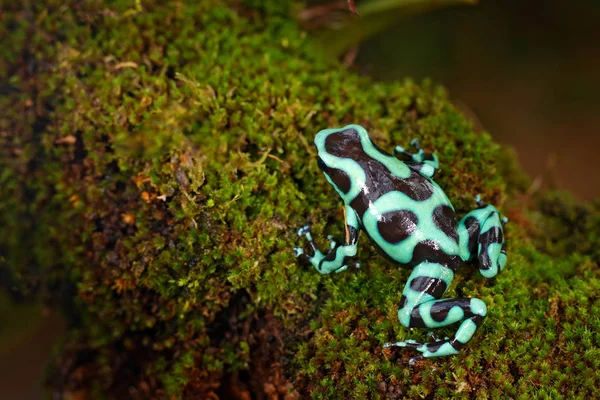

Froagie

Apesar de se reproduzirem nas águas essa espécie de sapo geralmente é encontrada no ambiente terrestre nas áreas da floresta Amazônica, principalmente pela parte do Brasil. Há registros da espécie também no Suriname e na Guiana Francesa.